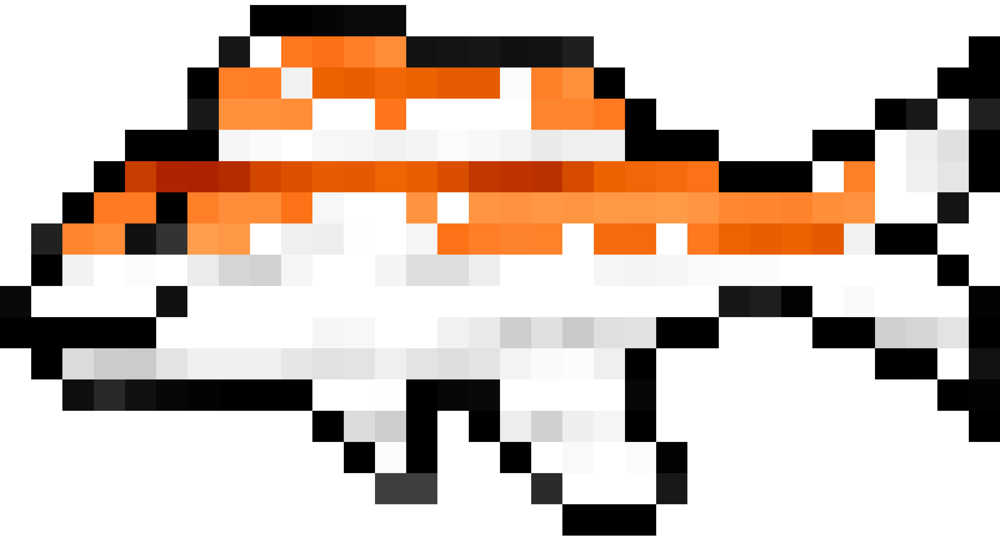

BSTU Exam Master
О проекте
Цель проекта
Мы - группа студентов первого курса факультета информационных технологий Белорусского государственного технологического университета. И, будучи озабоченными предстоящей экзаменационной сессией, поставили перед собой цель: разработать приложение , которое бы могло помочь студентам подготовиться к одному из экзаменов.На данный момент приложение находится в альфа-тестировании и из всех представленных дисциплин доступна только "ОПИ". Остальные дисциплины находятся в разработке и скоро будут введены в эксплуатацию.
Реализация проекта
Прокет был разработан нашей командой в промежуток с 08.12.2023 по 25.12.2023. С 25.12.2023 по 29.12.2023 проходил стадию тестирования и исправления ошибок. С 29.12.2023 готов к использованию.
Разработчики
Руководство проекта
Позиция: Скрам-мастер
Ответственен за организацию работы команды и разработку документации и сайта проекта.
Позиция: Сениор-разработчик
Ответственен за контроль качества итогового продукта и разработку модулей взаимодействия с данными.
Разработчики

Позиция: Тестировщик
Ответственна за тестирование функциональности продукта на всех этапах разработки